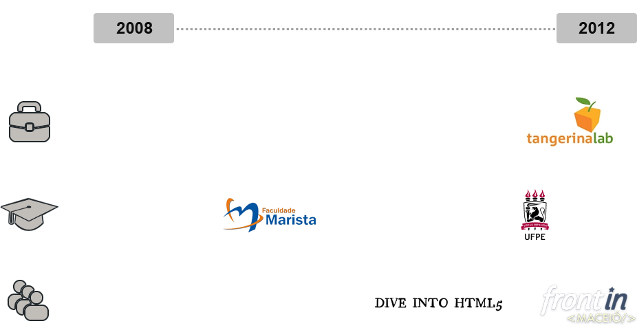
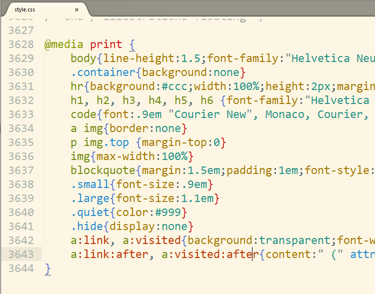
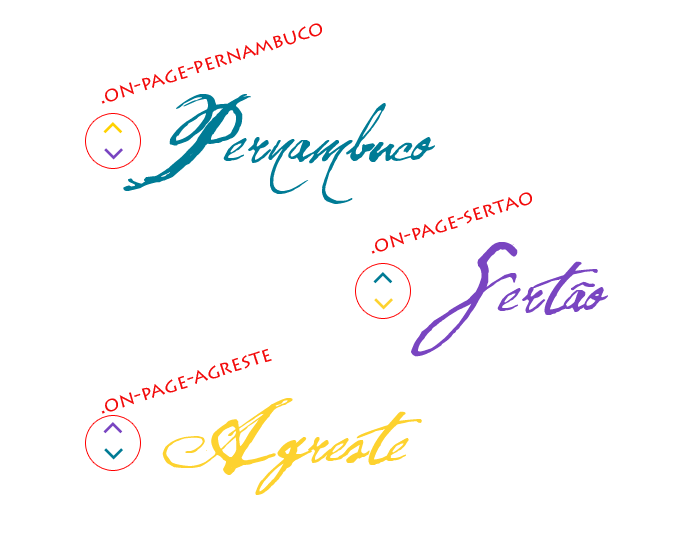
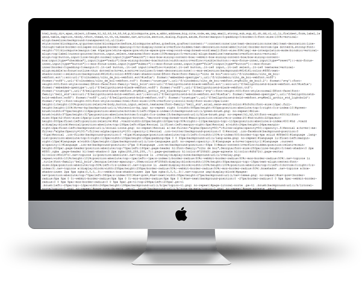
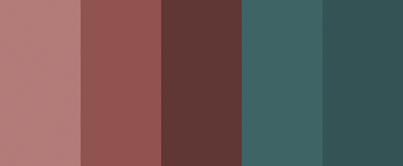
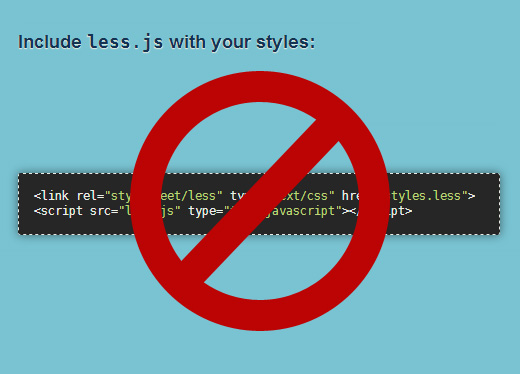
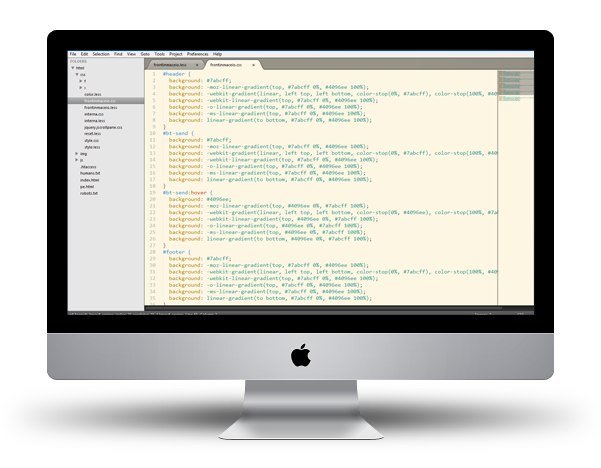
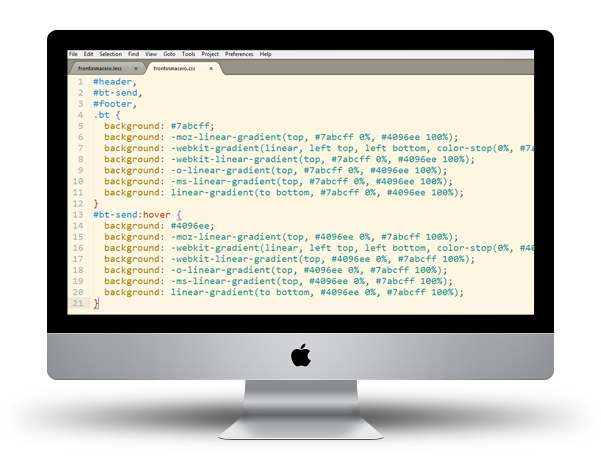

Pré-processadores CSS
http://talks.ramonvictor.com/frontinmaceio/
Quem sou eu?
@ramonvictor
O que veremos?
- Problemas ao codificar CSS
- O que são Pré-processadores?
- Pré-processadores CSS mais populares
- Ferramentas
- Principais features
- Onde tomar cuidado
Os problemas
que enfrentamos
ao codificar CSS
Definição de CSS
É um mecanismo simples para adicionar estilos (p.ex., fontes, cores, espaçamentos) aos documentos Web.
Maujor
Tudo muito simples...
body {
background: #000 url('imagens/minhaimagem.gif');
}
h3 {
color: #f00;
}
p {
margin-left: 15px;
padding: 1.5em;
}
Até que...
- Border-radius
- Transitions
- Animation
- Multiple Backgrounds
- ...
CSS3 nos deu
super poderes
Com grandes poderes
vem grandes...
complexidades
Milhares de prefixos
.botao{
background: #1e5799;
background: -moz-linear-gradient(top, #1e5799 0%, #2989d8 50%, #207cca 51%, #7db9e8 100%);
background: -webkit-gradient(linear, left top, left bottom, color-stop(0%,#1e5799), color-stop(50%,#2989d8), color-stop(51%,#207cca), color-stop(100%,#7db9e8));
background: -webkit-linear-gradient(top, #1e5799 0%,#2989d8 50%,#207cca 51%,#7db9e8 100%);
background: -o-linear-gradient(top, #1e5799 0%,#2989d8 50%,#207cca 51%,#7db9e8 100%);
background: -ms-linear-gradient(top, #1e5799 0%,#2989d8 50%,#207cca 51%,#7db9e8 100%);
background: linear-gradient(to bottom, #1e5799 0%,#2989d8 50%,#207cca 51%,#7db9e8 100%);
}
Arquivos gigantes
Repetitivos
#header h1{
color: #FF0000;
border-radius: 5px;
-webkit-border-radius: 5px;
-moz-border-radius: 5px;
}
#sidebar a{
color: #FF0000;
}
#fotter{
border-radius: 5px;
-webkit-border-radius: 5px;
-moz-border-radius: 5px;
}
É nesse cenário que surgem os
Pré-processadores CSS
Mas o que são
pré-processadores?
O que são pré-processadores?
Quando você deseja dizer que esqueceu algo...
Deu #FFFFFF!
Deu branco!

O que são pré-processadores?
Alguém conhece esse cara?
Ele é um pré-processador CSS!
O que são pré-processadores?
Então Pré-processadores CSS...
- Entendem o linguajar dos desenvolvedores
- A sintaxe das CSS é browser-friendly
- Os pré-processadores CSS são human-friendly
 Preste atenção!
Preste atenção!
- Não estamos falando em melhorar o core do CSS. O W3C já vem fazendo isso.
- Estamos falando de workflow de desenvolvimento.
- Mais especificamente de eficiência no desenvolvimento.
I want to work faster and more efficiently. That's what CSS preprocessors really do.
Chris Coyier (CSS Tricks)
Pré-processadores CSS mais populares
 Syntax
Syntax
// LESS
@color: #4D926F;
#header {
color: @color;
.rounded();
}
.rounded(@r: 5px) {
-webkit-border-radius: @r;
-moz-border-radius: @r;
-ms-border-radius: @r;
-o-border-radius: @r;
border-radius: @r;
}/* CSS Compilado */
#header {
color: #4D926F;
-webkit-border-radius: 5px;
-moz-border-radius: 5px;
-ms-border-radius: 5px;
-o-border-radius: 5px;
border-radius: 5px;
} Syntax
Syntax
// .SCSS
$blue: #3bbfce;
$margin: 16px;
.content-navigation {
border-color: $blue;
color:
darken($blue, 9%);
}
.border {
padding: $margin / 2;
margin: $margin / 2;
border-color: $blue;
}// .SASS
$blue: #3bbfce
$margin: 16px
.content-navigation
border-color: $blue
color: darken($blue, 9%)
.border
padding: $margin / 2
margin: $margin / 2
border-color: $blue Syntax
Syntax
// Stylus
border-radius()
-webkit-border-radius arguments
-moz-border-radius arguments
border-radius arguments
body
font 12px Helvetica, Arial, sans-serif
a.button
border-radius(5px)/* CSS compilado */
body {
font: 12px Helvetica, Arial, sans-serif
}
a.button {
-webkit-border-radius: 5px;
-moz-border-radius: 5px;
border-radius: 5px;
}Mitos
- Sass apenas em projetos Ruby
- Less só roda no client-side
- Bootstrap usa Less, então ele é o melhor
- É muito difícil de usar
Compilar código? ¬¬"
Eu ODEIO trabalhar com linha de comando!
Qual é o melhor?
Qual é o melhor?
Principais features
dos Pré-processadores
Comentários
Versão do dev
// ===============================
// Cores
// ===============================
h1{ color: #555; }
p{ color: #ccc; }
a{ color: #999; }Versão produção
h1{color:#555}p{color: #ccc}a{color:#999}Uso de variáveis
/* Sem pré-processador */
.on-page-pernambuco #nav-prev{
background-color: #fdd22f
}
.on-page-pernambuco #nav-next{
background-color: #7945c1
}
.on-page-sertao #nav-prev{
background-color: #28bad9
}
.on-page-sertao #nav-next{
background-color: #fdd22f
}
.on-page-agreste #nav-prev{
background-color: #7945c1
} /* ... */
Usando LESS
@azul-pernambuco: #28bad9;
@roxo-sertao: #7945c1;
@amarelo-agreste: #fdd22f;
.on-page-pernambuco #nav-prev{
background-color: @amarelo-agreste;
}
.on-page-pernambuco #nav-next{
background-color: @roxo-sertao;
}
.on-page-sertao #nav-prev{
background-color: @azul-pernambuco;
}
.on-page-sertao #nav-next{
background-color: @amarelo-agreste;
}
.on-page-agreste #nav-prev{
background-color: @roxo-sertao;
} /* ... */
Variáveis não são apenas para cor
@fonts: Arial, sans-serif;
@img-path: "../img/";
@margin: "15px";
@column-width: "290px";
@desktop-width: "960px";
& mágico
// LESS
#nav{
a{
color: @dark-blue;
&:hover{
color: @orange;
}
.rgba &{
color: rgba(37, 55, 148, .5);
}
}
}
/* CSS compilado */
#nav a{
color: #253794;
}
#nav a:hover{
color: #ff8a00;
}
.rgba #nav a{
color: rgba(37, 55, 148, .5);
}
Cansado de repetição?
/* CSS puro */
#nav {
overflow: hidden;
}
#nav li{
float: left;
margin-right: 10px;
}
#nav a{
color: #555;
}
Use aninhamento
/* LESS Syntax */
#nav{
overflow: hidden;
li{
float: left;
margin-right: 10px;
}
a{
color: #555;
}
}
Código ficando ilegível?
/* LESS Syntax */
#nav a{
-webkit-transform-origin: right bottom;
-moz-transform-origin: right bottom;
-ms-transform-origin: right bottom;
-o-transform-origin: right bottom;
transform-origin: right bottom;
transform: rotate(50);
-ms-transform: rotate(50);
-moz-transform: rotate(50);
-webkit-transform: rotate(50);
-o-transform: rotate(50);
}
#nav a:hover{
-webkit-transform-origin: right bottom;
-moz-transform-origin: right bottom;
-ms-transform-origin: right bottom;
-o-transform-origin: right bottom;
transform-origin: right bottom;
transform: rotate(0);
-ms-transform: rotate(0);
-moz-transform: rotate(0);
-webkit-transform: rotate(0);
-o-transform: rotate(0);
}Use mixins!
/* LESS Syntax */
.rotate ( @deg, @x, @y ){
-webkit-transform-origin: @x @y;
-moz-transform-origin: @x @y;
-ms-transform-origin: @x @y;
-o-transform-origin: @x @y;
transform-origin: @x @y;
transform: rotate(@deg);
-ms-transform: rotate(@deg);
-moz-transform: rotate(@deg);
-webkit-transform: rotate(@deg);
-o-transform: rotate(@deg);
}
Mixins
/* LESS Syntax */
#nav{
a{
.rotate(50, right, bottom);
&:hover{
.rotate(0, right, bottom);
}
}
}
Operações e funções para cor
// Operações
width: 960px / 3; // = 320px
color: #990033 + #666666; // = #FF66CC
// Funções para cor
color: saturate(@base, 5%);
border-color: lighten(@base, 30%);
background-color: darken(@color, 10%);
@import sem contraindicações!
// LESS
@import "colors";
@import "fonts.less";
@import "grid";
@import "mixins";
Organização de pastas
css/
global.scss
currentpage.scss
scss/
global/
_colors.scss
_mixins.scss
_reset.scss
components/
_buttons.scss
_modal.scss
E tem mais...
Compressão de arquivos de graça
Paleta de cores

@base: #663333;
@complement1: spin(@base, 180);
@complement2: darken(spin(@base, 180), 5%);
@lighten1: lighten(@base, 15%);
@lighten2: lighten(@base, 30%);
+
=
CSS sprite
// Compass Sprite
@import "my-icons/*.png";
.actions {
.new { @include my-icons-sprite(new); }
.edit { @include my-icons-sprite(edit); }
.save { @include my-icons-sprite(save); }
.delete { @include my-icons-sprite(del); }
}
CSS sprite
/* Compass */
.my-icons-del {
background-position: 0 0;
}
.my-icons-edit {
background-position: 0 -32px;
}
.my-icons-new {
background-position: 0 -64px;
}
.my-icons-save {
background-position: 0 -96px;
}
Imagem Width & Height automático
// Compass Helpers
$bt-cadastro: '../img/bt_cadastro.gif';
.bt-cadastrar{
background: url($bt-cadastro) no-repeat;
width: image-width($bt-cadastro);
height: image-height($bt-cadastro);
}
Onde tomar cuidado?
Não compile client-side!
Mixins são perigosos!
Imagine que você queria usar
aquele degradê bem legal...
Less gradient mixin
.gradient( @from, @to){
background: @from;
background: -moz-linear-gradient(top, @from 0%, @to 100%);
background: -webkit-gradient(linear, left top, left bottom, color-stop(0%,@from), color-stop(100%,@to));
background: -webkit-linear-gradient(top, @from 0%,@to 100%);
background: -o-linear-gradient(top, @from 0%,@to 100%);
background: -ms-linear-gradient(top, @from 0%,@to 100%);
background: linear-gradient(to bottom, @from 0%,@to 100%);
}Usando o mixin
#header{
.gradient( #7abcff, #4096ee );
}
#bt-send {
.gradient( #7abcff, #4096ee );
&:hover{
.gradient( #4096ee, #7abcff );
}
}
#footer {
.gradient( #7abcff, #4096ee );
}
.bt {
.gradient( #7abcff, #4096ee );
}
Resultado: 45 linhas de CSS
E se fosse assim...
#header,
#bt-send,
#footer,
.bt
{
.gradient( #7abcff, #4096ee );
}
#bt-send:hover{
.gradient( #4096ee, #7abcff );
}
Resultado: 21 linhas de CSS
A lição é simples...
- Não tente dar um passo maior que sua perna!
- Se não sabe CSS, aprenda!
- Aprendeu? Agora sim é hora de usar pré-processadores
Vá além
- OOCSS
- DRY CSS
- Clean code
- ...
To have a great idea,
have a lot of them.
Edison, Thomas A.